Hugh Anderson [Q]
July, 2026
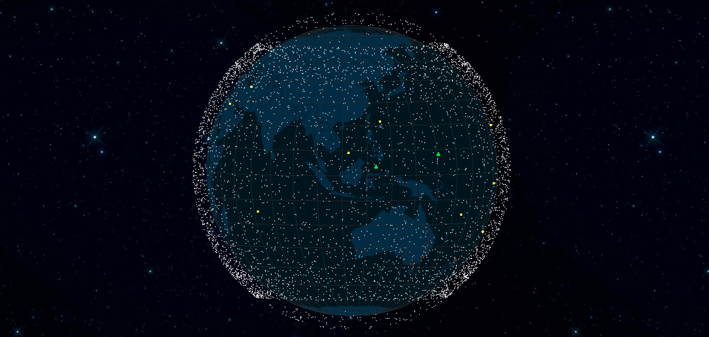
Warfare, with an indistinct enemy.
Examples - phishing, vishing, tricking. Human weaknesses.
Fight back with design principles, standards and formal methods.
Traditional systems - substitution and permutation. (Pre 1976).
(Post 1976) Asymmetric systems: OWF, computational complexity, hashes.
Today we will look at the Internet, exploring a little of the motivation and history of the development of the IP protocols. Sadly, security was never much of an issue during the early development of the Internet. We will look at various tools and work on “hardening” the Internet.
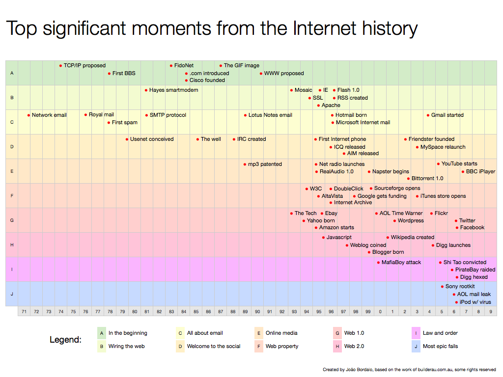
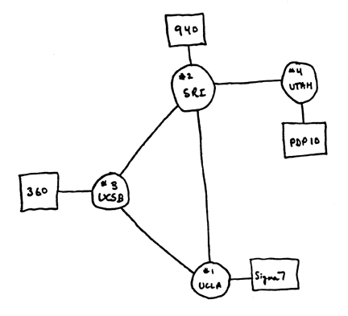
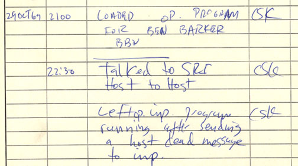
The original network diagramming tool was a pencil, and the first network had four routers (originally called IMPs ), and four nodes (At UCSB, UCLA, SRI and University of Utah). The first successful transmission was from UCLA to SRI in October 1969, and was recorded in the UCLA logbook.
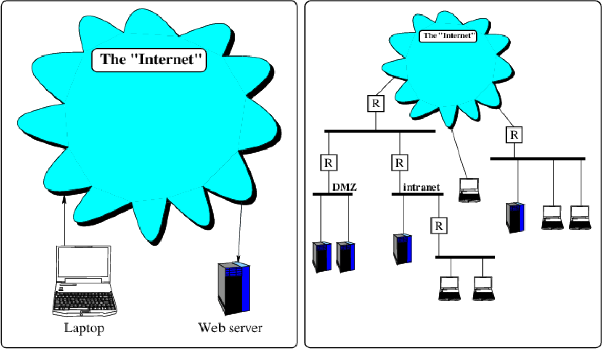
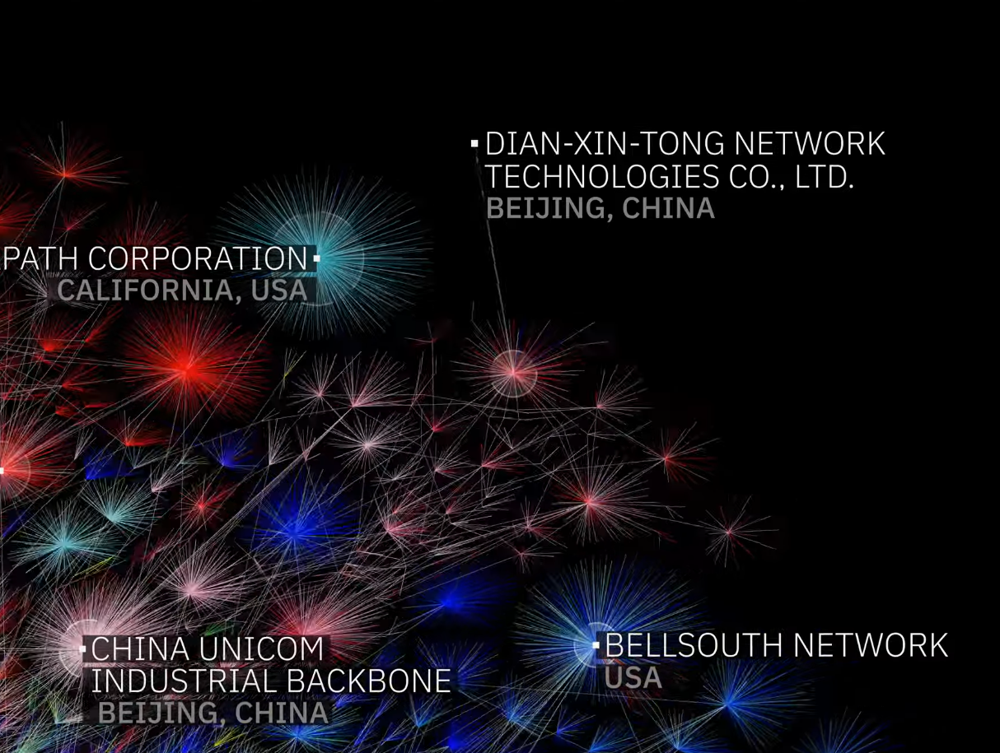
The topology of the Internet, particularly nearer the ’edge’ of the Internet, appears more like a tree than a lattice, and we use the routers to control access to and from the smaller local networks. In 2026 there are about 17 billion computers on the Internet.
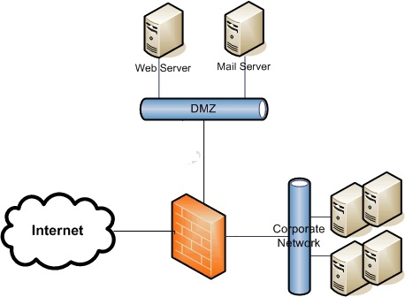
Firewalls are brick walls often found in wooden buildings and are supposed to prevent the spread of fire. In networking we use the same idea - the firewall is a router, which limits access to and from the Internet. We normally imagine that the fire is on the Internet side :)
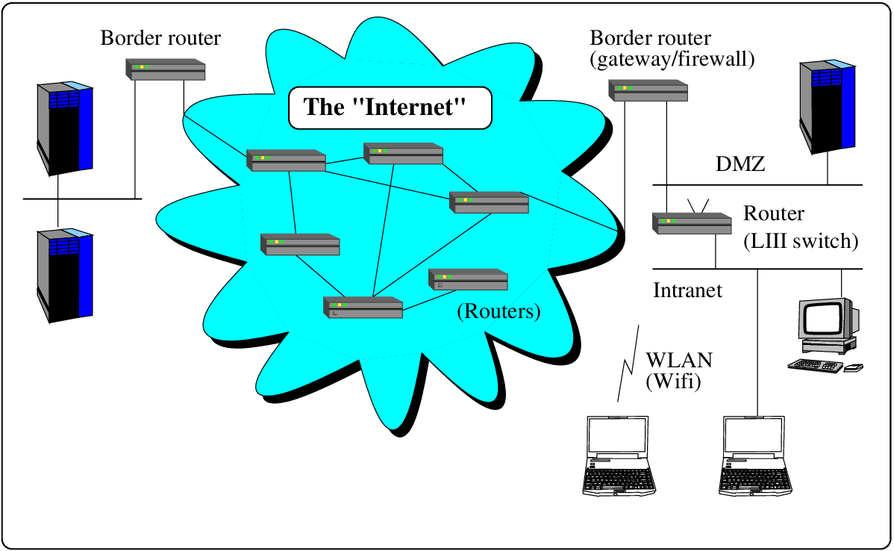
No real management except the Internet standards, and seriously complex.
Close to you...
But far away too...
Who does all of this? Anonymous people with (a) a computer, and (b) an Internet connection. Not too hard.
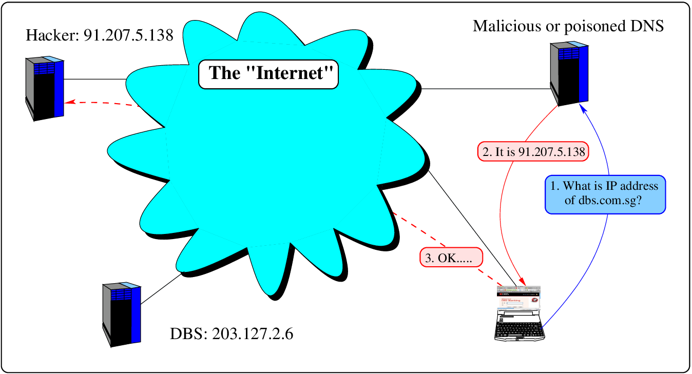
You connect to dbs.com.sg to do some banking.
But... A local DNS (Domain name system) server lies to your computer, and connects you to hackers.r.us who have put up a spoof version of the bank’s web site.
The spoof version collects your password and login information and proceeds to empty your account.
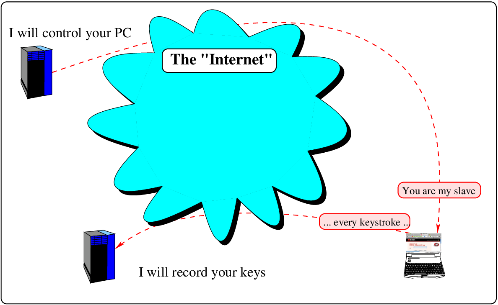
A web site fastdownloads.org.uk says it will improve your Internet experience by 225%! You say yes, and it installs a useful bit of software.
Actually - it installs something which sends every key you type to hackers.r.us, and/or allows someone in Guatemala to control your machine...
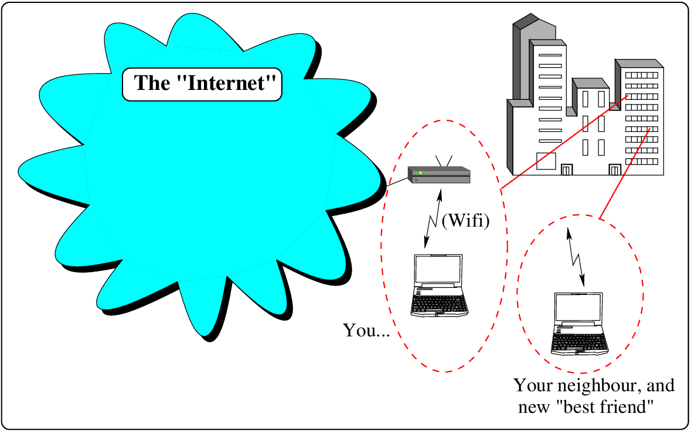
Your next door neighbour observes your wifi network.
Your neighbour hacks your network authentication password, and from then on, uses your Internet link, and monitors your traffic to and from the Internet, retrieving your passwords etc...
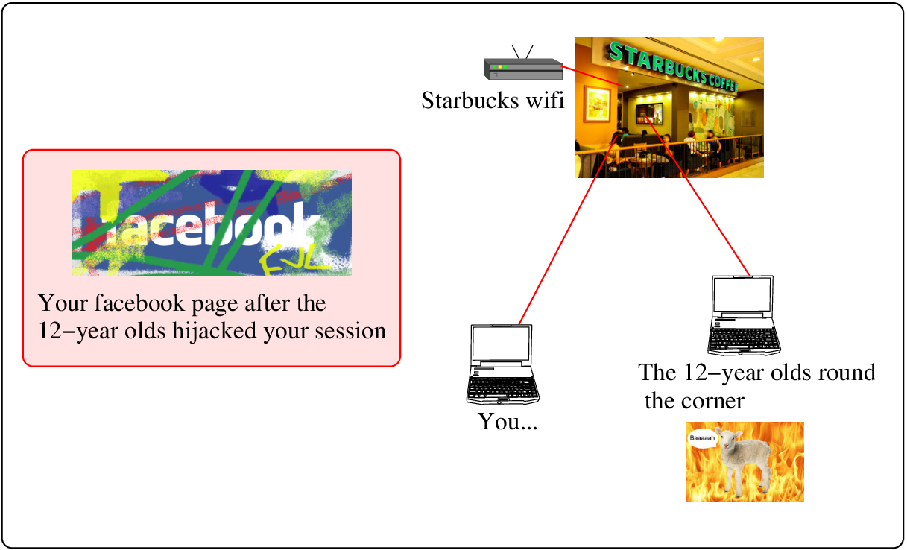
A cluster of 12 yr-olds there are using Firesheep, and steal a cookie and take over your facebook session, posting all sorts of “funny” stuff1.
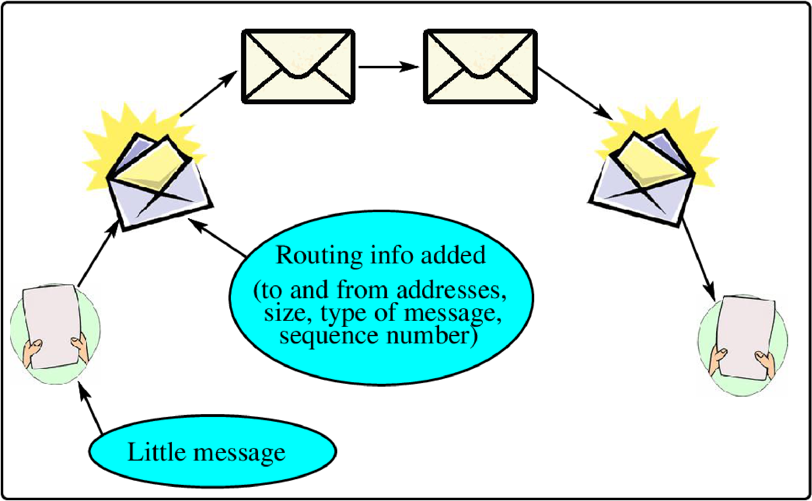
The original design, specified in the wonderfully passively named RFCs (Requests For Comments) was for a network resilient against nuclear attacks, to allow the US military to respond to attack from Russia in the 1960s. No thought was given to security, only resilience, and there is lots of opportunity to modify and corrupt messages; routing information, spoofing etc.
A layered model provides a framework to hang your understanding of computer networking on.
The protocol specifies how
communication is performed with the layer at the same level in the other computer. This does not for instance mean that the network layer directly communicates with the network layer in the other computer, instead each layer uses the services provided by the layer below it, and provides services to the layer above it.
The definition of services between adjacent layers is called an
interface.
What are the
advantages of the layered structure?
Note that a protocol specifies the interaction between peer layers. An interface specifies the interactions between adjacent layers.
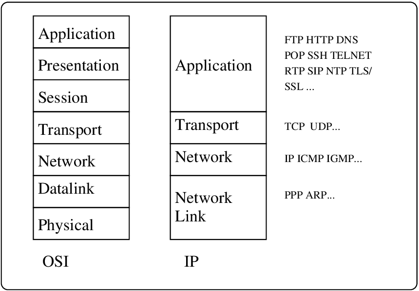
The Internet does not use the 7 layered model. It only has four layers:
for comms between applications on different platforms.
for sessions, and network independance.
for managing routing and addressing.
medium, connectors cables independance.
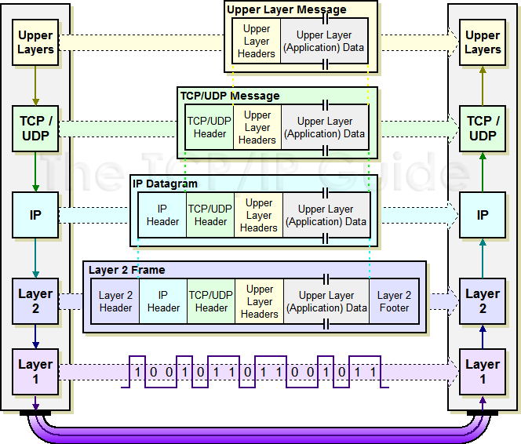
Note that in this way, even if you are just sending a single character/byte, by the time it is on it’s way, it may be hundreds of bytes long.
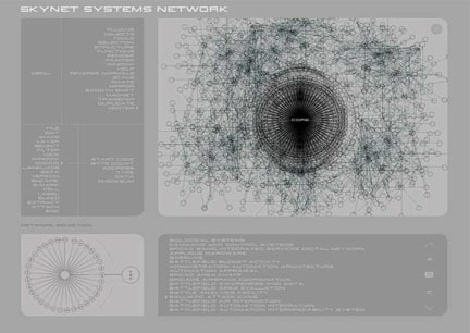 |
It seems like we cannot trust the protocols or the machines! |
Communication between computers comes in many flavours of protocol, and at different levels.
Not only multiple machines that could cause problems, but also multiple protocols at multiple levels.
No administrative centre, just general agreement to use the RFCs, not much in the way of police!
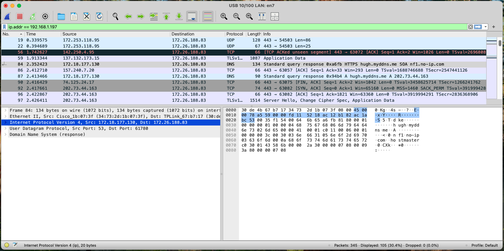
Wireshark captures and displays network traffic, not only IP protocols, but also many of the other communication protocols. You can inspect the contents of the traffic, broken down by layer.
In general we trust each one of these remote services and routers to do what we want.
On Ethernet, when we wish to send a transmission to another host, we can broadcast it, but normally we use ARP (Address Resolution Protocol), to find out the specific MAC address for the required IP address. We then send it to that MAC address, and other hosts will ignore the transmission.
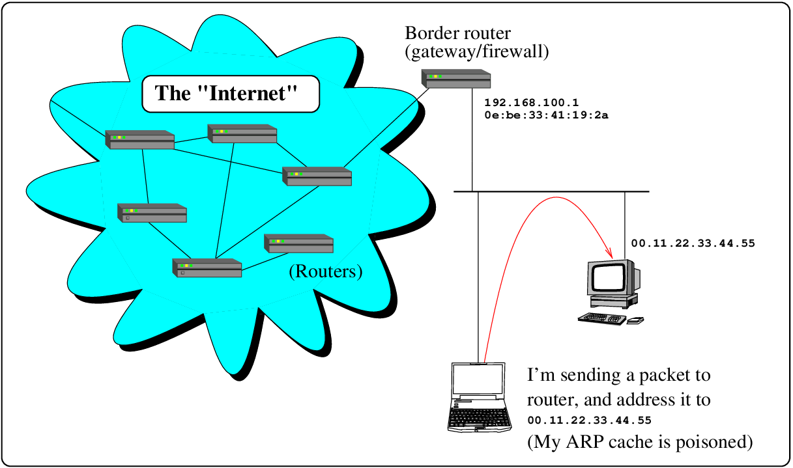
your ARP cache has been poisoned
convincing you that your local router 192.168.100.1 is at MAC address 00:11:22:33:44:55. This happens
to be a hacking machine on your network. You send your packets addressed
to that machine (which responds to convince you it is 192.168.100.1 ).
your router’s ARP cache has been poisoned to convince it to reply to the hacking machine instead of your PC.
If your host’s ARP cache has an incorrect value, you will instead send the frame to the incorrect host.
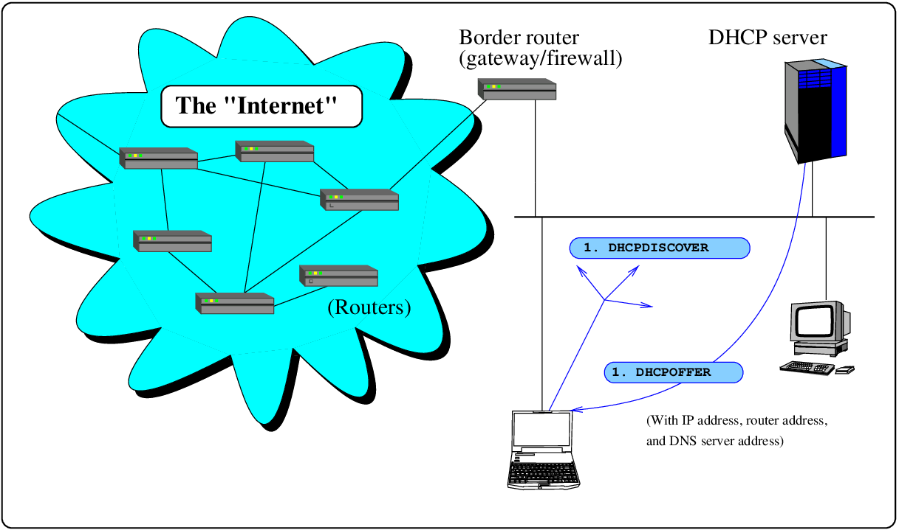
When a host’s interface starts or restarts, it sends out a DHCPDISCOVER broadcast, asking for a nearby authoritative DHCP server to offer it a useable IP and DNS address, with the DHCPOFFER response.
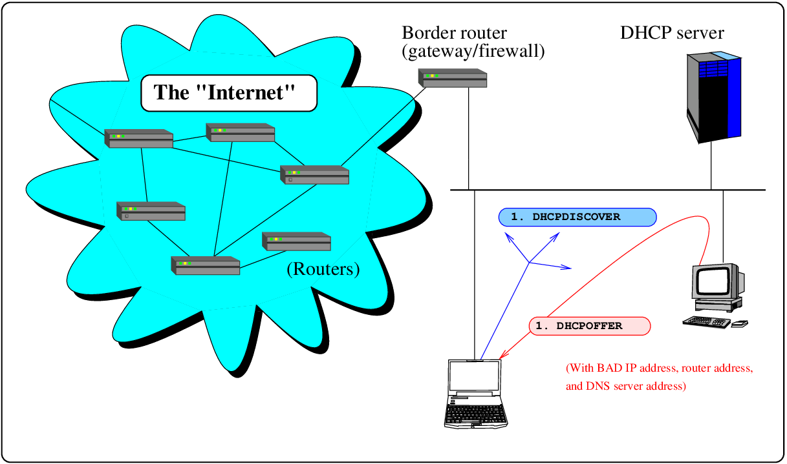
There is no security at all in the process, so maybe something can go wrong. A malicious DHCP server tells you a bad router or a bad DNS server. From then on you send all your DNS requests to this server, and our cached mapping for dbs.com.sg is incorrect.
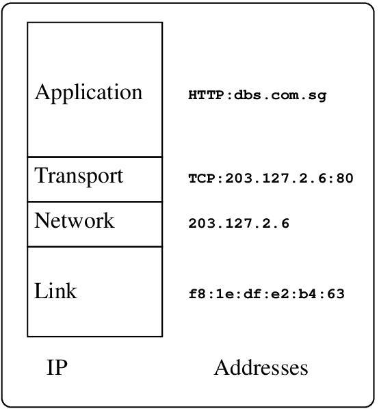
|
|
Each layer has its own mode of addressing, with automatic translations from MAC to network addresses (
ARP ), and from names to IP addresses (DNS ).
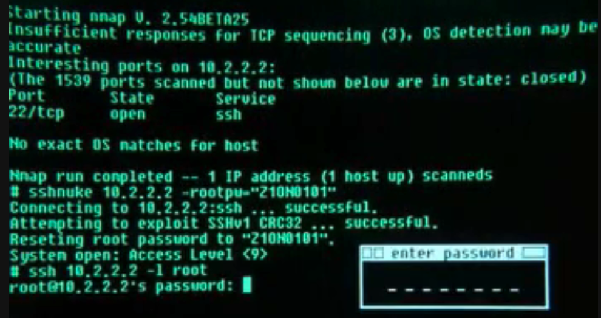
Systems are dangerously easy to subvert. And look! nmap!
When your browser wishes to look at a web-site (dbs.com.sg say), your machine queries a nearby DNS (name) server. It belongs to a world-wide system of caching DNS servers, and knows what to do if it does not have the mapping from name to IP address.
Well - there is little security in the process, so maybe
For example: a machine on your local network sees your DNS request for dbs.com.sg and responds quickly with corrupt information (91.207.5.138). From then on your computer sends all your network traffic to the corrupt address; your cache is poisoned.
Another example: a machine on an upstream network sees your DNS server’s request for dbs.com.sg and responds quickly with corrupt information (91.207.5.138). From then on your computer sends all your network traffic to the corrupt address; the DNS server’s cache is poisoned.
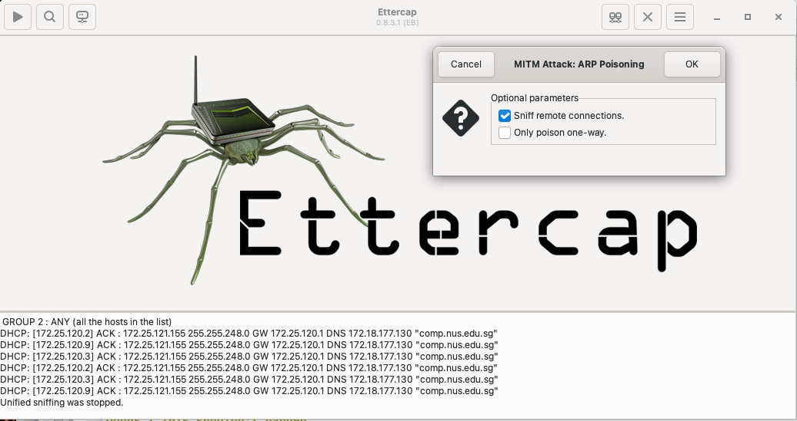
Ettercap is a platform for a wide range of network specific attacks - for example it can easily do any of the attacks we have just seen.
Sam Bowne explains about (ISO OSI) Layer 4 and 7 attacks.
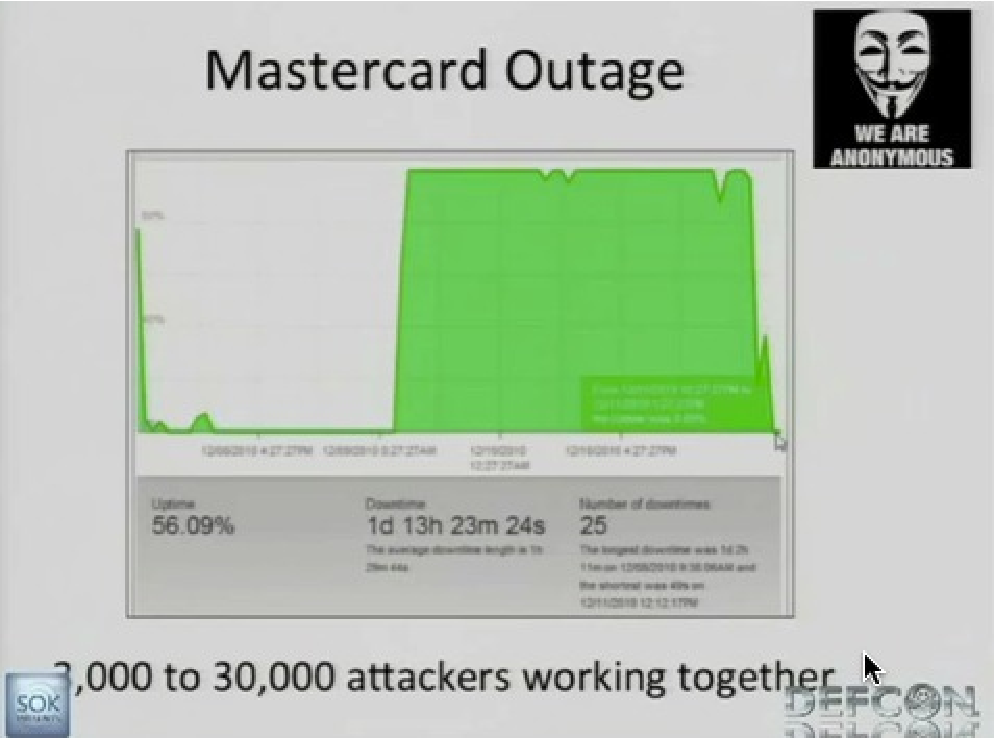
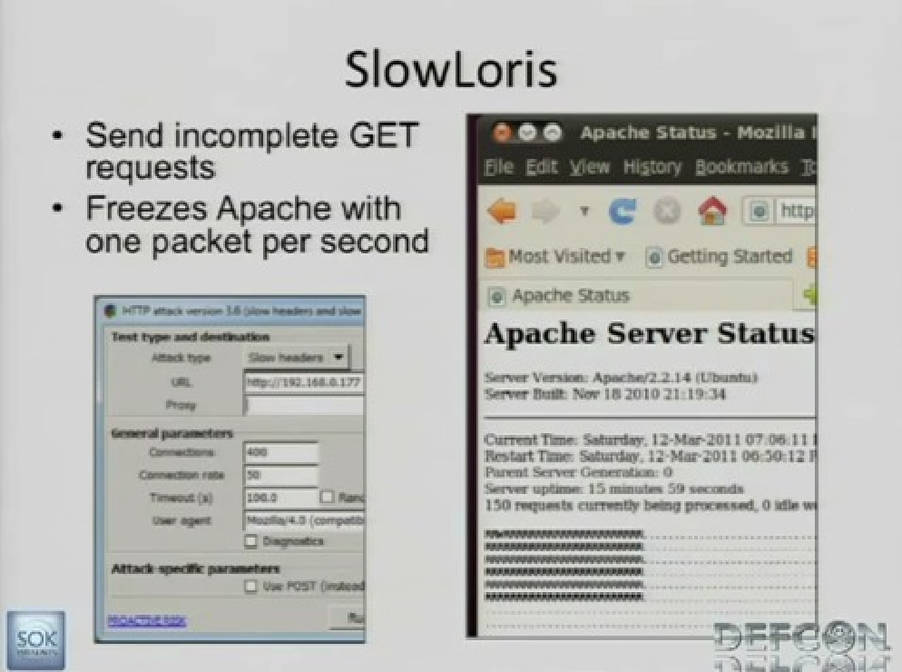
Since the Internet topology/connectivity can change, the routers continually exchange “routing information”. This is in line with the original goals of a system which can survive nuclear attacks on parts of the network.
Routing information is communicated using routing protocols, for example:
(Routing Information Protocol) an older protocol for exchanging routing information. Your PC understands RIP, but most routers ignore it these days. Not all.
(Interior Gateway Routing Protocol) is a proprietary (CISCO) protocol, created to overcome limitations of RIP for large networks.
(Border Gateway Protocol) makes most routing decisions on the Internet.
These protocols update tables/caches in each connected router to allow it to make decisions where to send IP traffic. These routers themselves can be lied to (in terms of routing info), and can be hacked.
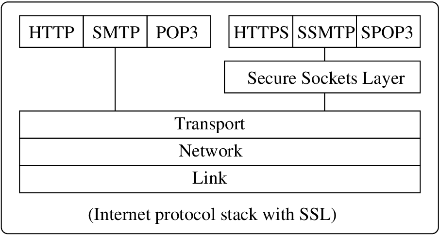 |
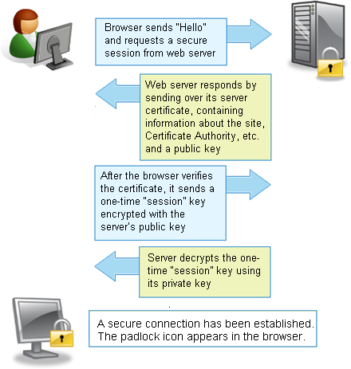 |
SSL was developed by Taher Elgamal at Netscape for it’s browser in 1995. TLS is an IETF standard see [X] above.
Public key cryptography is used to authenticate, and negotiate encryption, for ordinary symmetric key communication (3-DES, AES...), with new session keys for each connection.
Standard protocols (HTTP, SMTP ...) are “tunnelled ” through the SSL layer. PKI,PK are used for authentication, and to exchange session keys. Symmetric protocols (such as 3DES) are used for encryption.
The protocol includes an idea of not just public/private keys, but public keys authenticated by a certifying authority.
Unfortunately, in 2009, various attacks on SSL/TLS were discovered, from loopholes in the protocol. An attacker is able to execute any HTTP transaction, authenticated by a legitimate user
You can read about it at [ctrl-i6] above.
It allows a man-in-the-middle to inject a chosen plaintext prefix into the encrypted data stream. An “authentication gap” exists during a renegotiation process during which separate SSL/TLS connections can be put together. Fixes were done in early 2010, but many servers and browsers still not fixed.
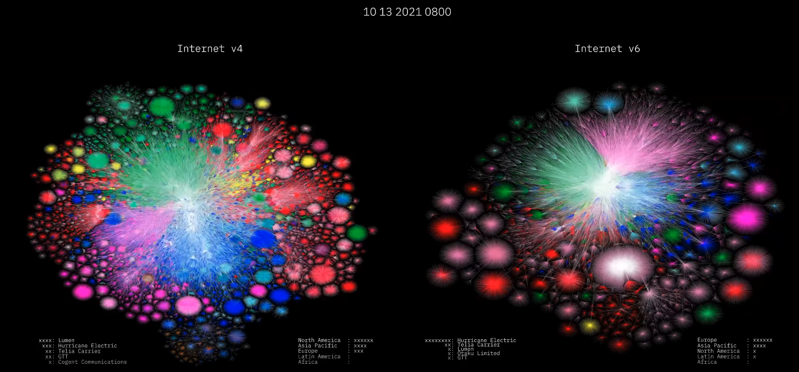
Intended to support communication security between networked computers, particularly in the newer IPv6 (IP Next-Generation) network. IPsec software is available in Windows, Linux, and on routers on the Internet (see [XX] above).
IPsec may be used in a range of ways, including to provide VPNs (Virtual Private Networks) flexibly.
With TLS/ we set up individual encrypted links for each application. In a professional environment we may want end-to-end encryption, where all traffic is encrypted (not just the https traffic). IPsec can flexibly set up and tunnel as needed. IPsec takes care to use (high end) cryptography for all purposes - IPv6 and IPsec are all designed with security in mind.
History - We visited the birth of the Internet, and saw that its design was primarily driven by resilience concerns. We looked at it’s growth and complexity.
IP Protocol weaknesses - We looked at the layered structure of communication, and saw how both complexity and a lack of security focus make for a range of issues; attacks on ARP, the DNS, DHCP, web servers and so on.
The future - The next generation of the Internet has a fair amount of security built in, and as we adopt IPv6 and IPsec more and more, some of these issues will go away.
This led to facebook changing to https-by-default.↩︎